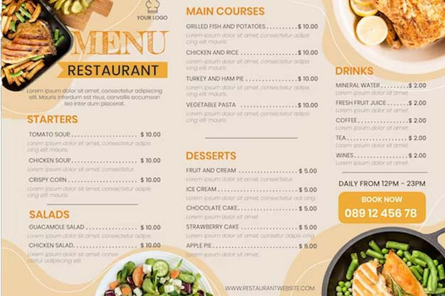

Nossa Equipe

Nossa equipe é formada por profissionais altamente qualificados, que estão à disposição de atender a todos os nossos clientes com excelência e cordialidade.
Os chefes são formados em renomadas escolas de culinária e tem experiência com os melhores chefes do mundo
Cardápio
Se desejar conhecer o nosso cardápio clique no botão